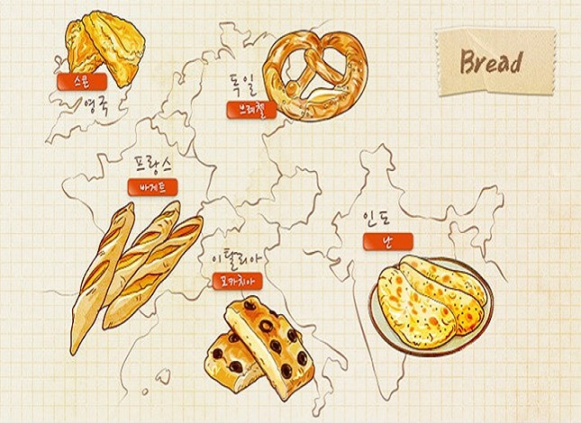

|  |
서양 사람들의 식탁에서 가장 먼저 생각나는 것은 바로 ‘빵’이다. 큼직한 덩어리의 빵을 손으로 찢은 뒤 버터를 발라 먹기도 하며, 바삭하게 구워진 토스트 위에 잼을 발라 먹는 모습은 서양인들의 식문화를 그대로 보여준다. 그러나 쌀을 주식으로 소비하는 우리 나라에서도 최근 들어 빵 중심의 식문화가 급속도로 확산되면서 더이상 빵은 서구 식생활의 전유물이 아닌 것으로 인식되고 있다. 특별한 날이 아니더라도 일상식으로 빵을 즐겨 먹게 되었으며, 다양한 종류의 빵을 쉽게 구할 수 있게 되면서 우리 일상에서도 친근한 존재가 되었다. 특히 막 구워낸 향긋한 빵에서 흘러나오는 향기는 가만히 맡고 있는 것만으로도 배가 고파지게 한다. 빵은 밀가루를 주원료로 하여 물을 섞어 발효시킨 뒤 오븐에서 구워낸 것을 지칭한다. 여기에 밀가루, 소금, 물, 이스트, 유제품류를 첨가하여 반죽을 배합하며 견과류나 건과일 등을 첨가하기도 한다. 빵은 독일어로 Brot, 영어로 Bread, 네덜란드어로는 Brood라고 불리는데 Bread, Brot, Brood의 어원은 고대 튜튼어인 Braudz(조각)에서 유래된 것이다. 또한 프랑스어 Pain, 스페인어 pan, 포르투갈어 pão 는 그리스 어인 pa, 라틴어인 panis에서 기원하였다. |